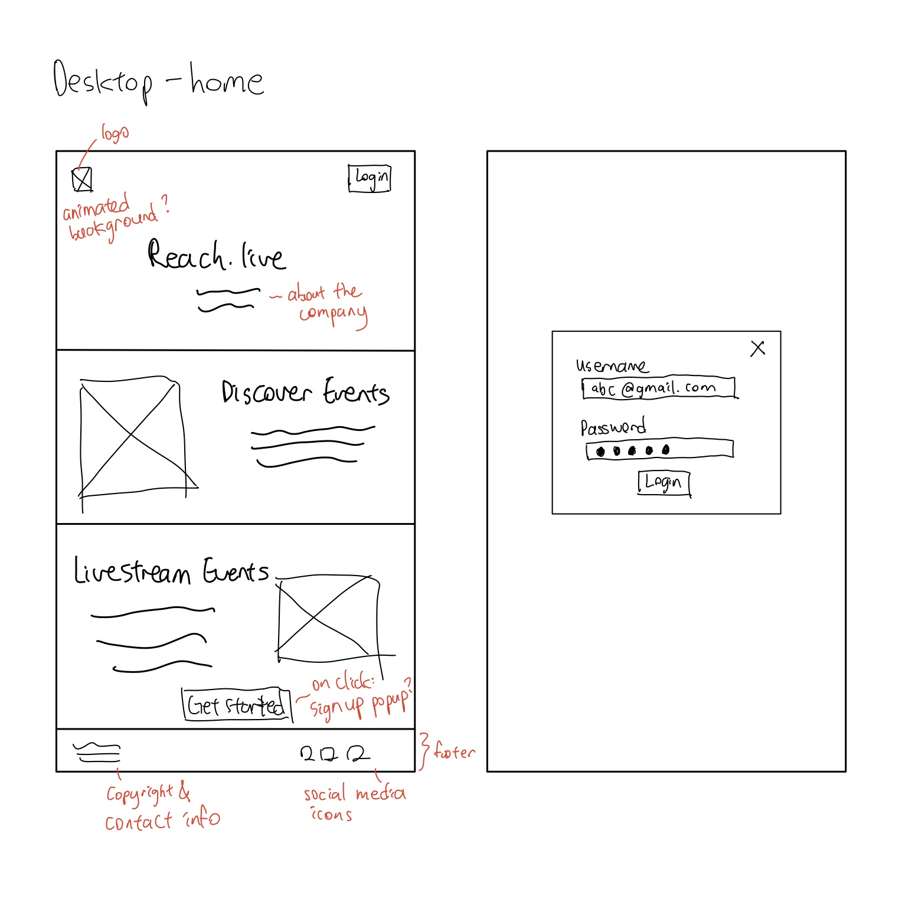
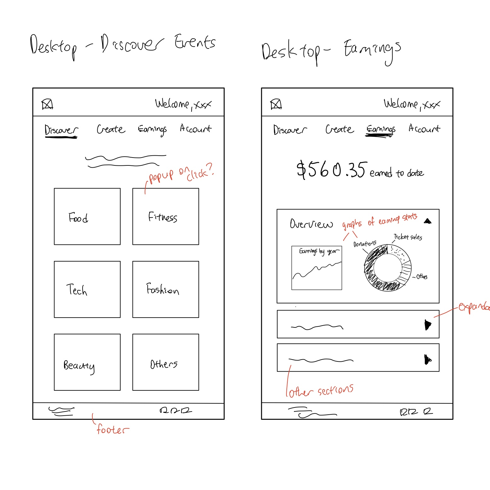
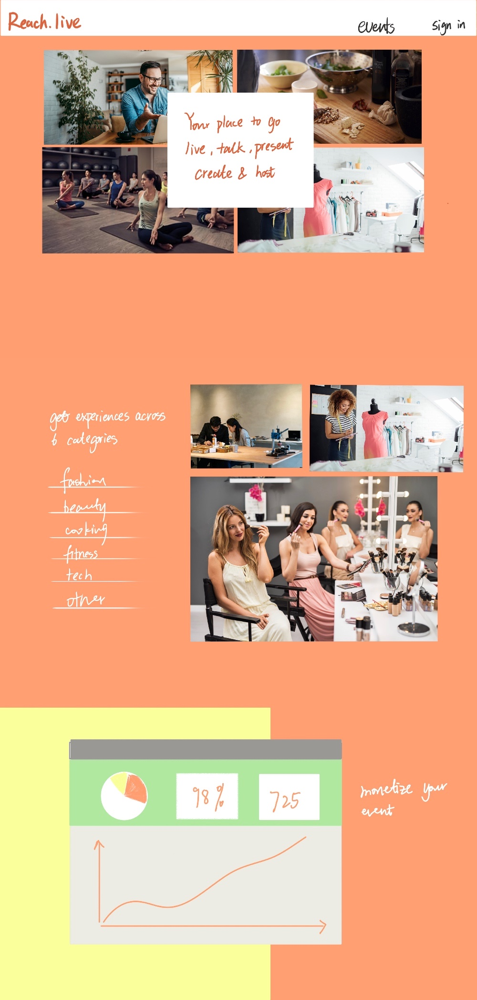
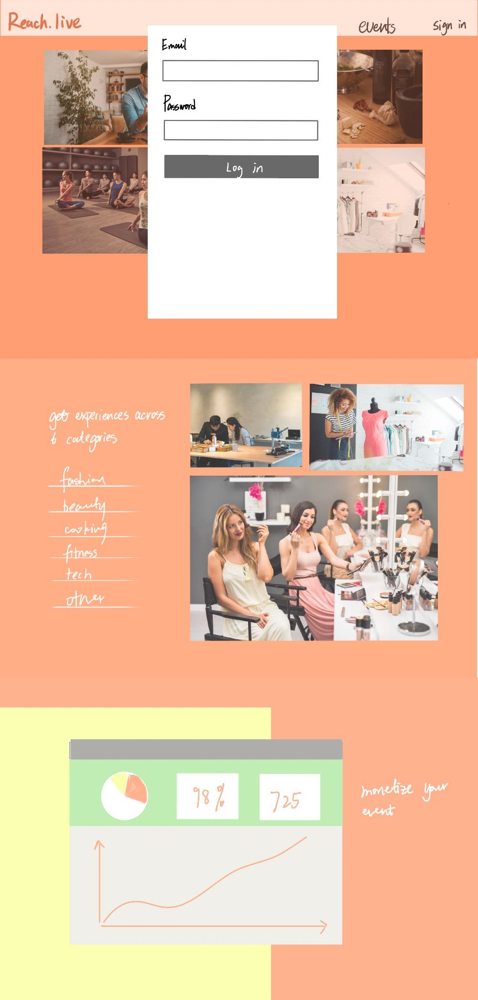
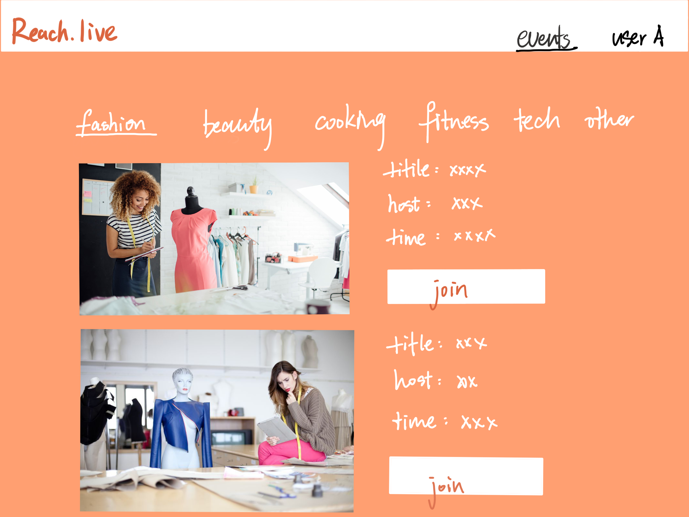
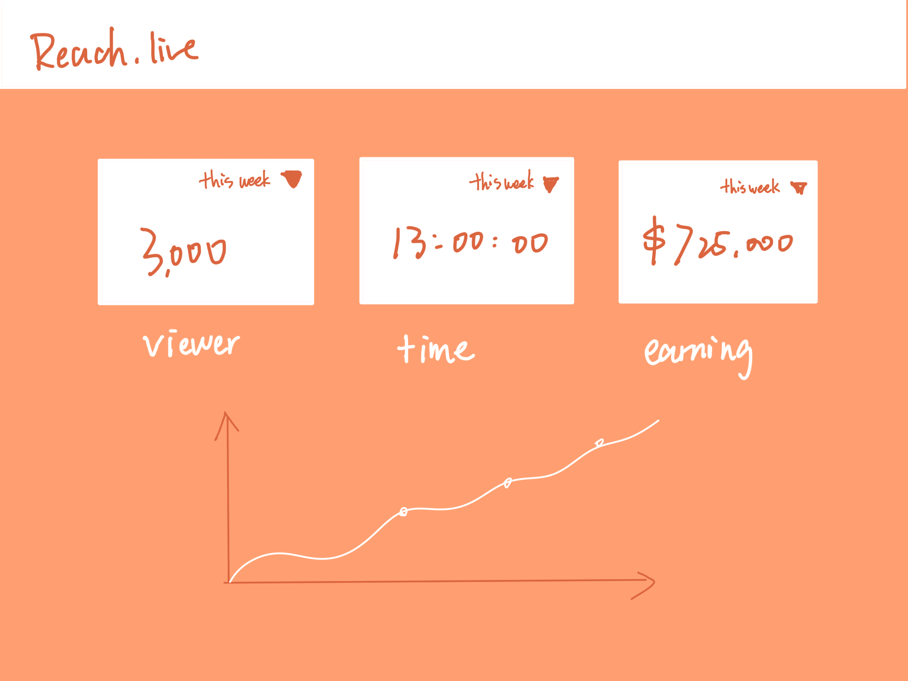
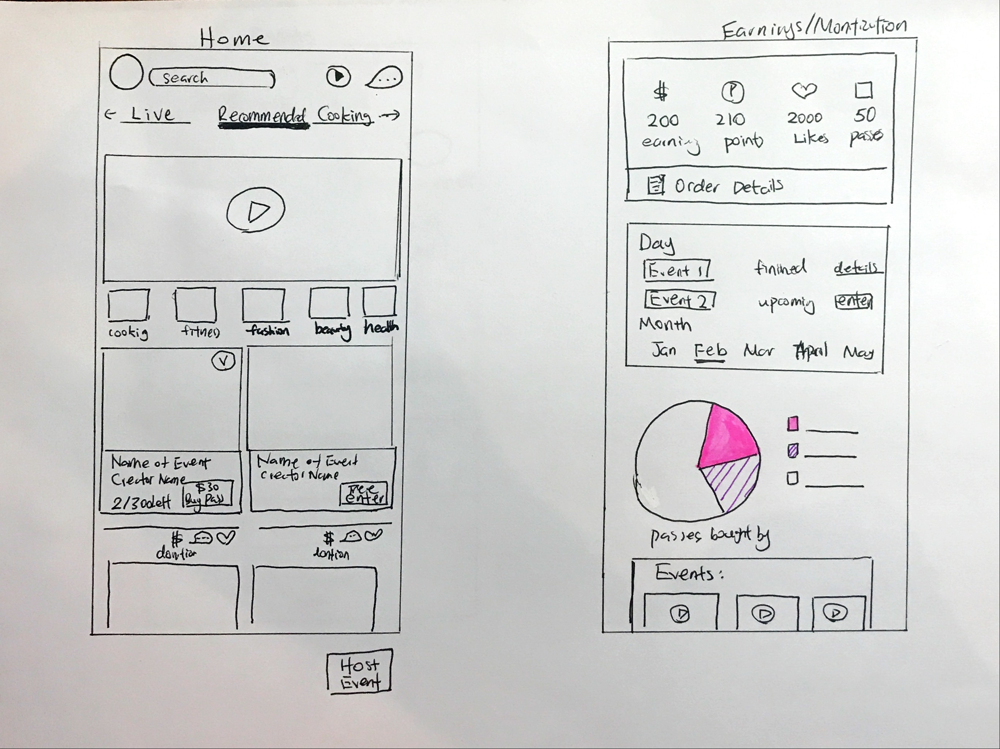
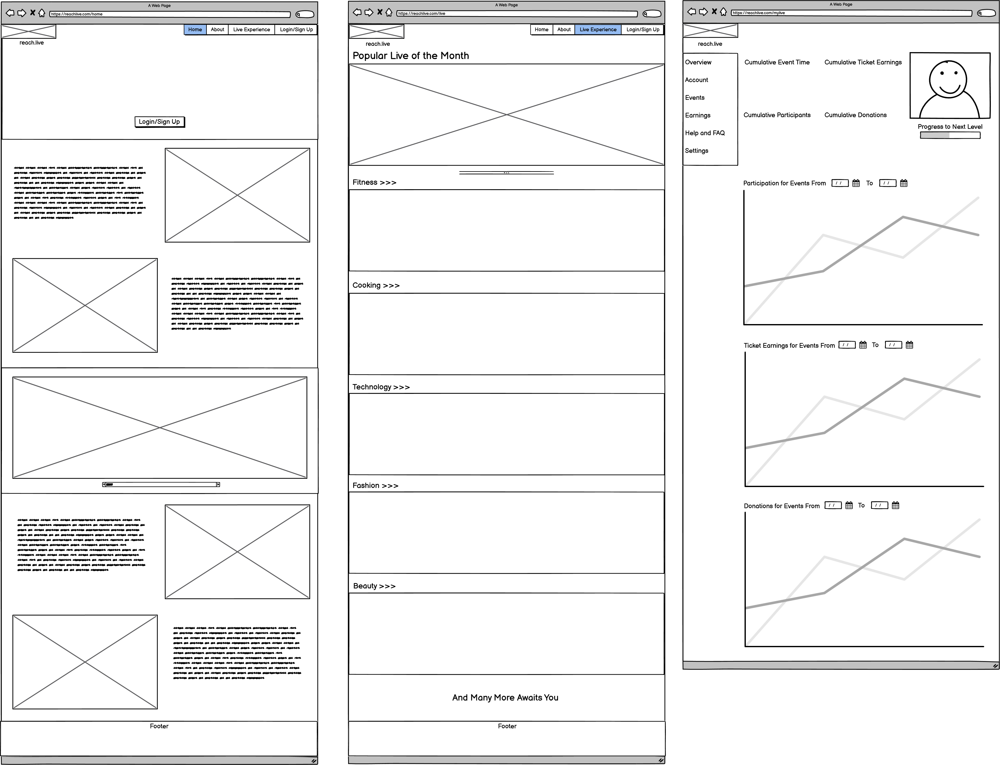

Overview
Iterative prototyping is an essential part of creating user interfaces. In this project, we design an interface for a startup from scratch using only their concept; we did not use anything they’ve already built such as logo, images, or content. Afterwards, we iterated on our design based feedback from classmates and an industry critic, then tested our final prototype on real users through usertesting.com.
Context
Our startup of choice is Reach.live and we referred to this summary from their Y-Combinator Demo:
“Lifestyle creators looking to monetize live content like yoga or cooking classes often have to resort to multiple platforms. Reach.live aims to put all of them together: storefront, scheduling, payments, subscriptions, donations, and even the video hosting.”
In our interface, we decided to highlight the below three aspects:
- Discover events, where creators can discover and sign up for events hosted by creators in categories such as food, fitness, tech, and more.
- Host events, where creators can host their own events and customize parameters ranging from category, time, to ticket price.
- Event analytics, where creators can gain detailed insights into their earnings breakdown and data from past events they have hosted.
Our target user group is lifestyle creators, especially those hoping to profit from their contents and discover contents from fellow creators. Since these creators mostly use produce and livestream contents on their computers, we decided to create a web interface to enable easier access and more flexible layouts.
Sketches
Each member of our group drew a set of sketches for at least three different pages: home page, event page, and analytics page. Our design for the event page differed a lot. Sally's design only showed the categories of the event to the users when they landed on the event page, and the users would find out the information about the events after they clicked on the category they are interested in. Sophia's design showed the featured events of each category on the event page. In contrast, Yuxiao's design only showed a list of the events of the default category (for example, fashion), and it would present the events in other categories after users clicked on the corresponding filters. Angela designed the event page from the point of creators. Creators could edit event information and see attendees information on the page.
Sally's Sketch
Home, Login, Events, and Analytics
 Yuxiao's Sketch
Home, Login
 Events, Analytics
 Angela's Sketch
Home, Analytics
Events

Sophia's Sketch
Home, Events, and Analytics
Wireframes
After we finished sketching, our group had a meeting to discuss our designs and combine the sketches above into a set of wireframes.
Without logging in, users could only see the Home page and the Explore Events page. Users would only see the remaining pages of the website after they have logged in, as we believed this design choice would make more users register for our website. If users are registered, then they are more likely to become loyal users, because Reach.live could reach out to users through email and advertise their events. Since Reach.live is a startup, we believed having more loyal users would be really beneficial to Reach.live. If more users are loyal to Reach. live, Reach.live will be likely to be more profitable.
Home and Explore Events

Home Page
We all agreed that Reach.live is a platform for both the event participants and the creators. Hence, we put the information (such as discover events, host events, monetize events, and live interactions with other participants and creators) that these two groups of people that would be interested in on the home page.
Explore Events Page
The explore events page showed a set of featured events under each category. We chose to present all categories on one page without using any filter or tabs because this would make the page look straightforward and would require fewer user interactions.
After logging into their accounts, users could see three tabs, events, analytics and account, which correspond to three pages.
Events and Analytics (logged in)

Events Page
There are two sections on the events page: 1. Discover Events 2. My Events. In the Discover Events section, users would see events in the default category, and they could view events of other categories when they clicked on the corresponding tabs. We made this design choice instead of showing events from different categories all together as we believed this would help users discover the events that they want to attend more clearly.
Account and Host Events (logged in)